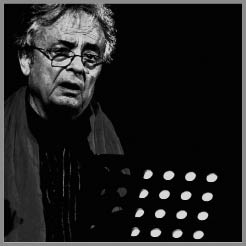

ADONIS
Adonis (Ali Ahmed Said Eşber'in takmaadı) günümüzde yaşan Arap şairlerinin en büyüğü olarak kabul edilmektedir. Takmaadı döngüsel yenilenmenin sembolü olan Fenikeli tanrıya gönderme yapmaktadır. 1930 yılında Suriye'nin kuzeyindeki bir dağ köyünde doğan Adonis'e, okuryazar bir köylü olan babası şiiri sevdirir. 1947 yılında komşu şehre gider ve orada Suriye cumhurbaşkanı Şükri el-Kuvvetli'yle karşılaşır. O dönemde on iki yaşında olan Adonis kendi yazdığı şiiri okuyarak kalabalığı etkiler. Başkan ona bir burs vermeye karar verir. Tartus'daki Fransız lisesine gider. 1954 yılında Şam'daki Suriye Üniversitesi'nden diplomasını alır (felsefe diploması). İlk şiirlerini on yedi yaşında yazar. Şiirlerini topladığı Şamlı Mihyar'ın Ezgileri 1961 yılında yayımlandığında modern Arap şiirinin kurucu eylemlerinden biri olarak görülür. Eserinin 1983 yılında yayımlanan Fransızca tercümesi, Adonis için dünya çapında tanınmasının başlangıcına işaret eder. 1955 yılında, Suriye'nin neredeyse bütün Ortadoğu'ya yayılmasını savunan bir parti olan Suriye Halk Partisi'ne mensup olmaktan altı ay hapse atılır. 1956'da serbest kalmasının ardından Beyrut'a kaçar ve orada 1957 yılında, Suriye-Lübnanlı şair Yusuf el-Khal'la birlikte Şi'r (Şiir) dergisini çıkartır. Derginin amacı Arap şiirini kısıtlayan çemberinden çıkarmak ve yabancı etkilere açmaktır. 1968 yılında Mavakif (Tutumlar) dergisini kurar. Bir özgürlük alanı ve şiirin "yapısını parçalayan" bir yenilenme laboratuarı olma iddiasındaki dergi Arap dünyasında hemen yasaklanır. Adonis bu dergide Baudelaire'i, Henri Michaux'yu, Saint-John Perse'i Arapçaya ve Ebul Ala el-Maari'yi de Fransızcaya çevirir. Adonis, çağdaş Arap şiirini, muhteşem geçmişine dayanarak ve Batı şiirinin zenginliğine bakarak yenilemeye çalışır. Lübnan'daki iç savaşın ardından 1980 yılında Lübnan'dan kaçarak 1985'ten itibaren Paris'e sığınır. Günümüzde, sayısız yankı bulan Adonis'in şiiri sesini uzamın ve zamanın hudutları ötesine taşımaktadır. Fransızcaya çevrilmiş eserleri arasında şunları sayabiliriz: Chants de Mihyar le Damascène (Poésie-Gallimard, 1983); Le temps des villes (Mercure de France, 1900); Mémoire du vent (Poèmes 1957-1990) (Poésie-Gallimard, 1991); La Prière et l'Épée: essai sur la culture arabe (Mercure de France, 1993); Tombeau pour New York (Sindbad-Actes Sud, 1999).

ADONIS
Sayın Adonis, belirli bir tarihsel durumda mutlak bir niteliğe sahip olmakla birlikte, gelenekleri korumayı da hedefleyen kitap olan Kuran hakkında ne düşünüyorsunuz?
Mümin bir Müslüman olmadığımdan Kuran'ı anladığımı ileri süremesem de, deyim yerindeyse, ben Kuran'ın içine doğdum, çünkü çocukluğumda ayetleri, hatta sureleri eksiksiz ezbere okurdum, babam bana öğretti bunları. Dinsel düzlemle arama koyduğum mesafeden bakınca şimdi Kuran'ı birincil bir metin olarak görüyorum. Ama bugün artık bu metni ikincil olarak adlandırdığım metinden ayıramıyoruz. İkincil metin yorumdur ya da ulemanın, hukukçuların ve filozofların, keza halifenin çevresindeki politikacı ve insanların yaptıkları yorumlar derlemesidir. Dolayısıyla çok karmaşık ve çok farklı olan bu ikincil metin, bence ilk metni gölgede bırakmıştır. Kuran'ı vahyedilmiş kitap olarak şimdi daha iyi anlamak için bu ilk metni ikincil kitaplardan kurtarmak gerekir, çünkü metinler ya da ikincil metinler Kuran'ı ideolojikleştirdiler, politize ettiler ve buradan da her türden köktenci hareket doğdu. Bence bunun Kuran'ın ilk metniyle alakası yoktur. Ama ilk metni ikincil metinden nasıl kurtarabiliriz? Bu bana çok güç geliyor. Bir düşünür, bir filozof, bir şair, kişisel olarak Kuran'ı tekrar okuyabilir, ama bu okumayı bütün bir milletin, tüm bir halkın kabul etmesi gerekir. Günümüzün sorunsalı da özünde ilk metinle ikincil metin arasındaki bu ikiliktir.
Köktencilik yalnızca İslami geleneklerde görülen bir şey değil, Hristiyanlarda, Hindularda, hatta Budistlerde bile var.
Yahudilerde de.
Bu köktencilikler, bir anlamda, modernizm karşıtlığının bir biçimi değil midir? Cezayir'de, İran'da, Pakistan'da örneğin.
Evet, kesinlikle, ama bu modernite ya da modernizmden ne anlaşıldığına bağlıdır. Mutlak anlamda modernite ne demek? Almanya'da ya da Batı'da moderniteden söz edildiğinde, bunun anlamı, bizim Arap toplumumuzda ya da Afrika'da örneğin veyahut Hindistan'da anlaşılandan kökten farklı.
Tek bir modernite yok, modernite çokluğu var, kültürel ve dinsel geleneklerden yola çıkan çok sayıda modernite var.
Evet. Birçok modernite var ama sizin sorunuzun sınırlarını daha iyi çizebilmek için, modernite ile köktenciliğin anlamlarını kavramak gerekir.
Bence köktencilik, özellikle de Müslüman köktencilik Batı tarafından, esasen de modern Batı tarafından teşvik edilip destekleniyor. Batı'nın belli bir kesiminin politikası ile bizim ülkemizdeki köktencilik arasında doğrudan ilişkiler var. Ama mutlak anlamda bakarsak, her köktencilik modern - karşıtıdır; açılım karşıtı, özgürlük karşıtı, aşma karşıtı, araştırma karşıtı olması anlamında modern karşıtıdır... Köktencilik her zaman için geçmişe dönüştür, geriye bir dönüştür. Geçmişten geçerek geleceğe gidilir. Bu her türden modern yaklaşımın tersidir.
Siz de kendinizi bir anlamda isyancı olarak niteliyorsunuz. Orta çağ mistiklerinin ve şairlerinin heretik geleneği içinde görüyorsunuz.
Evet, İslam'daki bu iki düzeyden yeniden söz etmek gerekir, birincisi ilk metnin ikincisi ikincil metnin düzeyidir. Ben, ikincil metne kesinlikle karşıyım, yasa hukukçuları denenlere, ulemalara karşıyım. Kuran'ı her türlü ideolojinin ve Kuran'ı ideolojikleştirme yönündeki her kaygının dışında okumuş ya da okuyan mistiklerin, şairlerin yanındayım. Bu anlamda, köktenciliğin karşısında heretiğim, varlığın ötesine giden bir yoruma bağlı kalmak yerine Kuran'ı harfiyen ele alınması gereken ve görünüm denen şeye bağlı bir metin olarak gören insanların karşısındayım; bu görünümün ötesinde, gizli anlamı aramak gerekir. Size bir örnek vereyim: Cehenneme, cennete, metin olarak, Kuran'da yazıldığı haliyle inanan köktenci Müslümanlar vardır; ama buna inanmayan, cehennemin de cennetin de bir sembol olduğunu açıklayan birçok mistik, hatta mümin Müslüman vardır. Dolayısıyla, bu anlayışları ya da inançları sembolik olarak yorumlamak gerekir. Ben, Kuran'ı tinsel metin olarak, yasanın dışında ve özellikle de politikanın dışında tekrar tekrar okumaya çalışan mistiklerin yanındayım.
İsrailli yazarlarla diyaloğu savunduğunuz için Suriye Yazarlar Birliği'nden atıldınız.
Evet, Granada'da Unesco'nun düzenlediği bir kolokyuma katıldım ve İsrail'in çok sayıda geleneğe sahip coğrafi bir bölgenin artık parçası olduğunu söyledim: Sümerler vardı, Asurlular, ardından Yunanlar, Hristiyanlık, firavunlar, Mısırlı kuşaklar, Musevilik de bunlara dahil. Dolayısıyla, olağanüstü bir kültürel melezliktir bu ve Hristiyanlık bu melezliği benimsedi, bu nedenle Hristiyanlık hem din hem de kültürdür, tıpkı İslam gibi. İslam da bir kültürdü, tüm diğer dinlere açıktı, Bağdat'taki ve Şam'daki Müslüman rejimin içinde Yahudi bakanlar vardı, Hristiyanlar da vardı; Yahudiler ve Hristiyanlar Arap toplumunun ve Arap kültürünün ayrılmaz parçasıydı. Ben de bu soruyu ortaya attım. Şimdi İsrail, gerçekten barış istiyorsa ve gerçekten Araplarla birlikte yaşamak istiyorsa, bu melezliği kabul etmelidir, kendisi de bu melezliğin parçası olmalıdır. Bu nedenle, günün birinde örneğin İsrail hükümetinde Hristiyan bir bakan Hristiyan azınlığı temsil etmek için değil, toplumun tümünü temsil etmek için var olur mu diye kendime soruyorum; aynı şekilde, Fas'ta Fas toplumunun bütününü temsil eden iki Yahudi bakanın olması gibi Müslüman bir bakan da olur mu diye; dahası, bütün Hristiyanlara, Yahudilere ve Müslümanlara eşit olarak açık karma bir eğitim olur mu diye kendi kendime soruyorum. Eğer Yahudilerde evlilik yasası değişirse, eğer bunu yaparsanız, sevgili İsrailli ve sevgili Yahudi bu toplumda birlikte yaşamak istiyorsunuz demektir. Ama eğer okulda kendi aranızda kalırsanız ve diğerlerini dışlarsanız, politik bir barışa, halklar arasında bir barışa, kültürel bir barışa, insani bir barışa varamazsınız.
Sizin eseriniz, bütün olarak, modern çağda Arap kimliği sorunuyla ilgili olduğu kadar bu soruya cevap vermenin reddiyle de ilgili.
İşte sorunun düğüm noktası bu. Kimliğe dair köktenci diyebileceğim belli bir anlayış mevcut. Kimliğin önceden imal edilmiş bir şey, önceden var olan bir şey olduğu... ve insan varlığının önceden imal edilmiş bu kimliğin gerçekleşmesi olduğu düşünülür. Kimlik bir kaynak gibidir ve o soydan gelenler kimliklerini daima bu kaynağın içinde, bu kaynağın ağzında, fışkırdığı yerde bulmalıdırlar... Benimse başka bir kimlik anlayışım var. Kimlik asla önceden imal edilmiş bir şey değildir, kimlik daimi bir açılımdır ve geçmişten gelmez, gelecekten gelir! İnsan kendi kimliğini kendi eserini yaratarak yaratır. Dolayısıyla kimlik sonsuzdadır, bitmez, ölümle bile bitmez, tamamlanamaz, işte bu. Tam tersi yani!
Sizin kimlik üzerine çalışmanız, gerçeküstücülüğün, Müslüman Arap kültürünün ve kurgusal mistiğin izinde şiirin sürekli yeniden ifade edilişi, sizin eserinizde üretken bir eklektizmi ortaya koyuyor; gelenek ile kültür arasında salınmayı sağlayan, hatta teşvik eden, aynı zamanda da size özgü olan ve eserinize tüm özgünlüğünü veren bu polifoniyi yaratıyor.
Teşekkür ederim. Bu beni rahatlatıyor, teskin ediyor. Mensup olduğum halkın geleneği yalnızca Arap geleneği değildir. Arap geleneği iki bin yıla uzanır, ama ben beş bin yıla uzanan bir geleneğe mensubum, dahası, modern bir geleneğe, modernitenin geleneğine de mensubum. İnsanlığın tüm geleneği benimdir, dolayısıyla bu Arap geleneğini, bu Arap şiirini başka şiirlere, başka kimliklere açmaya çalışıyorum. Ben kendimi bir Paul Celan'a, bir Goethe'ye, bir Rimbaud'ya tıpkı herhangi bir Arap şairine bağlı olduğum gibi bağlı hissediyorum. Şiirin önemi budur; aşk gibidir, zıtları birleştiren bir öğedir.
Dünya edebiyatına sizin katkınız Arap geleneğindeki bu bütünleştirici öğe, evrensel bir şiirdir.
En azından bunu denemeye çalışıyorum.
Arap şiiri Batı'nın tanımladığı kavram karşısında hem modern olup hem de Arap şiirinin kimliğini koruyabilir mi? Bu mümkün mü?
Ben modern sorunsalın, modernitenin sorunsalının öncelikle, Batılı olmadan önce, Arap olduğunu düşünüyorum. Modernite ve modern terimleri Hicretin II. yüzyılından itibaren, yani çağımızın sekizinci yüzyılından itibaren Arap geleneğinde mevcuttur. Bu moderniteyi biraz Baudelaire tarzında savunmuş şairlerimiz var. Baudelaire ebedî olarak adlandırdığı şey ile geçici dediği şey arasında, ebedîyet ile zaman arasında bir sentez yapmaya çalıştı. Arap şiirinin Baudelaire'den bin yıl önce yapmaya çalıştığı budur. Arap şiirinin modernliği bizdeki modernitenin bu tarihsel boyutu görülmeden anlaşılamaz.
Siz, Nietzsche'yle birlikte, Tanrı'nın öldüğünü saptadığınızda, bir yanda belli bir umutsuzluk ve varoluşsal kırılganlık hissediliyor, ama diğer yanda sanki bunun, yeni bir başlangıca cesaret edebilmek için bir şans olduğunu söyler gibisiniz.
Ben "Tanrı öldü!" dediğimde bu Tanrı'nın ikincil metnin Tanrı'sı olduğunu, köktenci Tanrı olduğunu, neredeyse tanrısallık karşıtı ve kapalı Tanrı anlayışı olduğunu söylüyorum. İnsanlara sunulan Tanrı imgesi korkunç ve dehşet verici. Dolayısıyla, bana göre ölen Tanrı dinin, kurumların bu Tanrı'sıdır, ben asla Tanrı'nın, mutlaktaki Tanrı'nın öldüğünü söylemedim. Kimlik olarak Tanrı'yı önümüzde aramamız gerekir. Tanrı asla ardımızda değildir, o daima önümüzdedir ve önden gelir.
Varoluşsal kırılganlığın sembolü olan yolculuk, size göre, kök salmanın ve milliyetçiliğin tam zıttını temsil etmiyor mu?
Kesinlikle doğru. Bu bağlamda, kök salmak asla istikrarlı ve katı olmak demek değildir. Kök salmak, hareketin içine kök salmaktır. Dolayısıyla benim köklerim, eğer kök diye bir şey varsa, benim adımlarımdadır, hareketlerimdedir, benim daima çok köküm olacaktır. Benim köklerim yalnızca kelimenin tam anlamıyla benim geleneğimin içinde değildir, benim köklerim, aynı zamanda bütün insanlıktır.
Ve yolculuk, buna "serseri gezginlik" de denebilir, aynı zamanda bir kurtuluş işareti, bağımsızlık, hudutların reddinin işareti değil midir? "Hudut tanımıyorum," diyorsunuz. Yolculuk şiirin en yüksek biçimi değil mi? Raymond Roussel'i, Michel Leiris'i, Rudyard Kipling ya da Joseph Conrad'ı düşünelim...
Yolculuk geleceğimizin metaforudur, geleceğe ve meçhule götüren o daimi geçişin metaforudur. Yolculuk etmek keşfetmektir, yolculuk etmek fiziksel varoluşumuzun en ötesine gitmektir ve yolculuk etmek meçhulle bağ kurmaktır. Bu nedenle yolculuk etmek benim için büyük bir semboldür, şiirsel ama aynı zamanda varoluşsal bir semboldür.
Bireyin yüceltilmesini, yaratıcı ve geleceğe açık bir şekilde kullanılan köksüzleşmeyi biliyoruz. Vatan kavramı sizin için nedir?
Bu perspektifte, vatan benim için asla tamamlanmış bir şey değildir. Vatan aşk gibidir, şiir gibidir; sürekli yeniden yaratılır, sürekli yenilenir.
Sizin şiiriniz bilgi açlığının damgasını taşıyor, sufilerin ve "itaatsiz şairler"in akımından esinleniyorsunuz, Ortega y Gasset'nin öğrencisi İspanyol filozof Maria Zambrano'nun deyimi bu. Siz Rimbaud'ya, Mallarmé'ye ve gerçeküstücülere gönderme yaparken, şiirin varlık üzerinde daha temel bir kapasitesi, bir gücü olduğunu kabul ediyorsunuz.
Buna inanıyorum, son sözü şiirin söyleyeceği kanısındayım, tabii eğer bir son söz varsa. Felsefe birçok fikir verebilir, birçok hakikat, ama belli bir anda, belli bir düzeyde felsefenin cevabı yoktur, söyleyecek... hiçbir hakikati yoktur. Bilimin durumu da aynıdır, diğer disiplinlerin, tarihin de durumu aynıdır. Dolayısıyla, bilgi biçimleri sessizliği koruduklarında ya da söyleyecek bir şeyleri olmadığında, o zaman geriye şiir kalır: Yalnızca onun söyleyecek bir şeyi vardır, bir şeyi olacaktır, her zaman; ve bu yönde, bizi bağlayan şiirdir, bizi meçhul olana, dolayısıyla temel olana açan şiirdir.
Ayrıca, varoluşun sırrını arayışınız sırasında, gerçeklik ile metafizik arasındaki, gizli olanla aşikâr olan arasındaki bu karşıtlıktan söz ediyorsunuz.
Bu bana gelenekten geliyor, biliyor musunuz! Kendi dünya kavrayışını gizlinin yorumu üzerinde temellendiren bir gelenek var, özellikle Şii ve mistik filozoflar; görünür olanla gizli olan arasında bir diyalektik daima var. Onlara göre, görünür olan şey hakikati temsil etmez, gerçekliği de etmez, görünür olan geçicidir, dolayısıyla gerçek ve temel olan şeyi gerçekten aramak istiyorsak, gizli olanın tarafına gitmek gerekir, çünkü gizli olan sonsuzu ve meçhulü simgeler ve eğer bir hakikat varsa, o zaman bu hakikat bu gizlinin içinde, bu sonsuzun içinde barınır.
New York üzerine şiiriniz (New York İçin Mezar) başlangıçta Walt Whitman'ı, vatanının ihanetine uğramış büyük Amerikan şairini hatırlatıyor ve sonunda sanayi uygarlığına itiraz ediyor. Sanayi-öncesi bir anlayışınız olduğu eleştirisi haklı mıdır?
Hayır, tekniğe karşı değilim. Tekniğin kullanımına karşıyım. Teknoloji, insan varlığının mutluluğuna katkıda bulunduğu ölçüde insan dehasının olağanüstü bir yanıdır, ama belli bir emperyalizm, Batı diyemem ama belli bir Batı emperyalizmi, insanlığın ilerlemesine, daha iyi yaşamasına yardım etmek için değil, tersine, dünyayı yıkmak için kullanarak teknolojiyi deforme etti; bunun kanıtı, silah imalatıdır, modern teknolojide egemen olan budur ve ben de buna karşıyım.
Şiirinizde dinsel bir boyut var mıdır? Ayrıca, dinselliği yorumlayışınız, en yüksek metaforu şiir olan kurtarıcı bir güç şeklindeki Kuran geleneğinde mi yer alır?
Dinsel, ama sözcüğün geleneksel anlamında değil. Ben bedenin kendi dini olduğu kanısındayım, beden kültürdür, hatta bütün bir kültürdür. Dolayısıyla, bu bedensel dünya üzerinde ısrarla duruyorum, bedenin bağrında o vardır, bütün dinlerin dışındadır ve bu dinsel boyutunu ben daha ziyade mistik hatta tinsel bir boyut olarak adlandırıyorum, çünkü benim için, eğer gerçekten bir tin varsa, eğer tin varsa, bu bedenin kendisidir. Beden ile ruh ya da tin arasındaki ilişkiye dair geleneksel anlayışları altüst ediyorum ve bizlerin, insanların, dinsel düşüncenin ağırlığı nedeniyle kendi bedenimizi tanımadığını, onu kesinlikle bilmediğimizi düşünüyorum. Âşıklar bile kendi bedenlerini derinlemesine konuşturmayı bilmiyorlar. Yeniden keşfetmemiz gereken tüm bir kıta var ve bu da insan vücududur.
Şairlerin kimi zaman kısmen tanrısal bir yetileri olduğunu düşünebilir miyiz?
Evet, tabii eğer "tanrısal" olanın anlamı üzerinde hemfikir olursak. Mistikte ya da şairde tanrısal olan şey, insanın yaşadığı bir aydınlanma durumu içerisinde insanın şeffaflaştığının hayal edilebilmesidir ve bu şeffaflıkla birlikte, insan dünyanın geçirimsizliğine nüfuz edebilir. Demek ki yalnızca iki şeffaflık vardır: insan varlığının şeffaflığı ile dünyanın şeffaflığı. Ve kaynaşma, bu iki şeffaflığın buluşması; tanrısal olan işte budur. Bu şeffaflığa uyuşturucu yoluyla erişmeye çalışmış çok şair vardır.
Evet, Henri Michaux örneğin.
Ama gerçek bir mistiğin uyuşturucuya asla ihtiyacı olmaz, o nüfuz edebilir olmak için, dünyanın bu geçirimsizliğini aşabilmek ve bu dünyalar arasındaki kaynaşmayı gerçekleştirebilmek için kendi deneyimiyle, kendini aydınlatmasıyla ya da şeffaflaşmasıyla uyuşur. Bunun adı da vecddir. Vecde sınır yoktur, yaşam ile ölüm arasında hudut yoktur ve bu deneyimlenebilir bir şeydir, herkes bunu cinsellikte deneyebilir. Cinsellikte, insanın ölüyor mu yaşıyor mu olduğunu bilmediği bir an vardır. Şairlerde ve büyük mistiklerdeki tanrısallık işte bu andır.
Batı edebiyatı sizi Doğu edebiyatı kadar belirledi; Batı ile Doğu arasındaki etkileşim sizin eserinizde nasıl ifade bulur?
Bana göre Batı ve Doğu coğrafi olarak vardır: Bu beni ilgilendirmez. Ama her Batı'da birçok Batı vardır ve her Doğu'da birçok Doğu vardır. Doğu ve Batı derken birçok şey sadeleştirilmiş olur. Batı'da coğrafi olarak Doğu'dan daha doğulu Doğu'lar olduğu söylenebilir, Doğu'da da coğrafi olarak Batı'dan daha batılı Batı'lar vardır. Batı bence bir fikirdir, bir anlayıştır, ama beni ilgilendiren insandır. Bence Batı ile Doğu arasında fark yoktur, coğrafi olan hariç, ve coğrafya bu anlamda önem taşımaz. Dolayısıyla, ben kendimi hem batılı hem doğulu hissediyorum ve fark görmüyorum.
Eserinizde sizi belirlemiş olan tinsel babalar kimlerdir?
Aslında ben şairlerden çok düşünürlerden etkilendim. Esasen Herakleitos'tan etkilendim. Onun diyalektiğinde benim için önem taşıyan şey, aynı ırmaktan iki kez geçemeyeceğinizdir. Dünyada bu daimi hareket vardır. Ve ben özellikle Batı uygarlığını ve özellikle Hristiyanlığı, Nietzsche gibi Hristiyan uygarlığını eleştirmiş düşünürlerden etkilendim.
Ya Arjantin'de Borges gibi, Peru'da Arguedas gibi, Brezilya'da Guimarães Rosa gibi ve Uruguay'da Juan Carlos Onetti gibi büyük "yaşanan metafizik"in büyük geleneğiyle birlikte Latin Amerika edebiyatı...
Octavio Paz gibi Latin Amerikalı şairleri iyi tanırım; dostumdu. Onun eserini biliyorum ve hayranım. Juan Rulfo'yu da tanıyorum.
Ben, dünya, beden ve tin, gökyüzü ve yeryüzü arasındaki bu başlangıçtaki kopma, ana yönleri birbirine bağlayan bir durumda aşılabilir mi? Bu mistik durumda inisiyasyonun en yüksek derecesine, karşıtları birleştirmeyi başarırsak en yüce dereceye varmak mümkün olur mu?
Zıtların çözüme uğradığı, zıddın artık olmadığı bu nihai ve en yüksek noktaya varmak gerekir. Buna çabalamış çok mistik vardır, ama yalnızca mistikler değil, gerçeküstücülüğün kendisi de zıtların olmadığı bu uç noktaya varmak için çabaladı. Bu tam da Herakleitos'tan geliyor. Dolayısıyla güzergâhı ya da süreci açıklamak, bu evreye nasıl gelindiğini açıklamak çok güç. Ama bu mistik bir inisiyasyonu gerektiriyor ve bir gün bu inisiyasyonu gerçekleştirme fırsatı çıkacağını umuyorum.
Arapça sözcüklerin metaforik zenginliği dolayısıyla, şiirsel edim yeni bir anlam ilişkisinin yaratılmasını sağlıyor ve bu da epifani biçimlerinde beliriyor.
İşte anlam sorunu. Öncelikle, bir anlam var mı? Varsa, bu anlam nedir? Anlamı nerede buluruz? Arap geleneğinde anlam önceden vardı. Arap şair şiir okuduğunda dinleyicilerin ondan beklentisi önceden bilinen anlamı söylemesidir. Aşktan söz ettiğinde, şan ve şereften söz ettiğinde, savaştan söz ettiğinde, okura ya da dinleyiciye kendisinin, okur ya da yayıncı olarak önceden bildiği bir anlamı verir. Ama bu anlamı şiirsel bir biçim içinde verir. Bana göre şiir sürekli kaçan bu anlamın peşinde sürekli koşmaktır, asla bir anlama varılamaz. Anlam daimi bir arayıştır. Ve eğer anlama varılırsa, eğer siz ya da herhangi biri bana "ben şimdi artık her şeyi biliyorum, bütün anlamları, bütün anlamı biliyorum" derseniz, bütün dinlerdeki her türden köktenci de bunu der zaten, bu dünyanın kapalı ve önceden bilinir olduğu anlamına gelir. Şiirde, felsefede dünya her zaman meçhuldür ve daima anlama doğru ilerlenir.
Çok büyük bir mütevazılıkla.
Tamamen.
Ortadoğu'da büyük bir imparatorluk inşa etmeye çalışmış olan Suriye Halk Partisi bir dönem sizin üzerinizde etkili oldu mu? Ortadoğu'ya bir kimlik vermeyi amaçlayan ve Fenikeliler dönemine ve mitolojilerine gönderme yapan bu teşebbüs sizi cezbetti mi?
Size söylediğim gibi ben çocukluğumdan bu yana benim geleneğimin yalnızca Arap gelenekleri olmadığını, benim geleneğimin daha geniş olduğunu, Sümer, Fenike geleneği olduğunu kabul ediyorum, hatta benim geleneğimin insan geleneği olduğunu, insanlık olduğunu tekrar tekrar söyledim.
Sizin şiiriniz yeni bir gerçekliği yansıtan mitolojik ve politik bir gelecek bakışının damgasını taşımıyor mu?
Benim şiirimde yeni bir gerçekliğe, hatta yeni bir politik gerçekliğe özlem duyan bazı yanlar görülebilir. Bunu görebiliriz. Ama özünde bu benim için arızi bir durumdu. İşin özü, mutlağın içindeki yeni bir dünyaydı ve daima da böyle kalmıştır; politik biçimler ve diğerleri gerektiği an oluşurlar.
Bir keresinde Arap-İslam kültürünün reformculara ve yıkıcılara ihtiyacı olduğunu söylediniz. Batı kültüründe de Nietzsche bunu söylemişti. Arap kültürünün tamamen katı ilkelerini yok edecek insanlara ihtiyaç olduğunu söylüyorsunuz. Bu kişiler tinsel ve entelektüel bir rönesansı doğuracaklar.
Kesinlikle. Bunu söylüyorum ve tekrarlıyorum. Tüm bu kültürü, özellikle ikincil metne bağlı kültürü tekrar tekrar sorgulayan radikal bir düşünce biçimine daima ihtiyaç vardır Günümüz Arap dünyasında düşüncenin ortaya çıkışına dair en ufak bir ize rastlamıyorum; dolayısıyla bu düzlemde, bence gelecek tehlikede.
Evet, insan kendi üzerine kapandı, ama özellikle bu temelde, yani Tanrı'nın ölümü temelinde kendi yaratıcı potansiyelini geliştirebilecek ve böylece bu ölümden yararlanabilecek mi insan?
Hayır, Tanrı asla ölmez! Sorun Tanrı'nın kendisi değil, Tanrı kavramları, sorun bu! Katı ve kapalı Tanrı anlayışlarından daima kurtulmak gerekir ya da dünya bir başka Tanrı görmeli.
Siz de varoluşçular gibi insanın durumunu vatansız bir varoluş olarak mı kabul ediyorsunuz? Amaçsız ve hedefsiz bir serseri gezginlik gibi. Şiirinizde meselsi bir kişilik olan Odysseus dolayımıyla ifade ettiğiniz şey bu mu?
Yolculuk budur. Bir vatan aynı zamanda bir tür yolculuktur. Bu nedenle diyorum ki, Odysseus geri dönmüş olsa da, vatanını ya da ülkesini görmek için geri dönmemiştir, çünkü kendi ülkesinde bile yolculuk halinde kalacaktır. İnsan varlığı kendi içinde daima yolculuktadır. Düşleri yolculuklardır, özlemleri yolculuklardır, aşkı yolculuktur, dostluğu yolculuktur. Daha eksiksiz ve daha tam olmak için, bir başka yere doğru kendinden çıkmayı her zaman dener. Bir başka yere doğru bu çıkış bir yolculuktur. Bu özellikle yaratıcılarda görülür. Yaratıcı daima göç halindedir. Kendi dilinin bağrında bile göç halindedir. Eğer her zaman göç etmemiş olsaydım, daima yola çıkmak üzere olmasaydım, kendi dilimin içinde, ana dilimde sürekli yolculuk halinde olmasaydım, ölmüş olurdum, boş olurdum. Dolayısıyla geri dönüş diye bir şey yoktur, biçimsel olarak geri dönülür, ama esasen daima yolculuk halindeyizdir.
Şam'ın sizin için mitsel bir boyutu yok mu? Şam, vatan metaforu olarak, bir merkezi temsil etmiyor mu? Viraneye dönmüş şehriyle bir vatan, yani Şam, ütopik, sütunlu şehir, umutsuzların vatanı, reddedenlerin vatanı...
Kesinlikle. Benim vatanım dilimde, şiirimde, dostluklarımda, aşkımda. Şam ya da Suriye'nin herhangi bir şehri ne yazık ki bu vatana artık benzemiyor. Bu nedenle maddi olarak şehir, gündelik yaşamın şehri olarak şehir sembol olarak Şam'a benzemiyor, ama yolculuğumun bütünleyici parçası olan bir öğe olarak benziyor.
Doğu'nun önemi politik olmaktan çok tinsel düzeyde değil mi? Dinlerin, mistiğin vatanı değil mi?
Kuşkusuz. Zaten modern teknikle ve Batı modernliğiyle çelişen de bu. Bu Doğu, tektanrılı üç dinin beşiği olmuş, barışın, dostluğun, halkların, açılımın, aşkın beşiği olduğu varsayılan bu Doğu şimdi savaşın, nefretin, yıkımın, karanlıkçılığın beşiği oldu. Çelişki burada. Ama bunu nasıl açıklamalı? Yalnızca Batı, emperyalizm, İsrail demek kolay. Aslında durumu anlamak için dini unutmak, dinin ideolojikleştirilmesini, yani dinin ideolojiye dönüşümünü unutmak olmaz. Doğu'da günümüzde egemen olan bu.
Sizin yolculuk şiiriniz, lirik rölyef olarak düş ve arzu manzarası aracılığıyla içe dönük bir yolculuk olarak okunuyor.
Evet, yalnızca içe doğru değil ötekine doğru da, çünkü öteki benim için temel bir yanı temsil ediyor. Öteki olmadan ben olarak var olamam. Dolayısıyla, eğer yolculuk ediyorsam içeride yolculuk ediyorum, ama ötekine doğru da yolculuk ediyorum. Çünkü kendimi öteki aracılığıyla keşfediyorum ve bu öteki olmadan kendimin de varolmadığını hissediyorum.
Gerçeküstücülük ile sufilik arasındaki akrabalığı algının bilinmeyen düzeylerine varma hedefiyle vurguluyorsunuz. Bu açıdan, Adonis'in yazısı kimi sufi ve gerçeküstücü şairlerin yazısıyla kıyaslanabilir.
Ben bu bağı mistisizm ile gerçeküstücülük arasında yapmaya çalıştım. Söylediklerim şairlere dönük bir şey, özellikle Arap şairlerine, gerçeküstücülük içinde belli bir mistisizm arayan genç kuşağa. Şunu dedim: Arap geleneğine yabancı bir hareket olan gerçeküstücülüğü okumak yerine, öncelikle mistisizmi daha iyi okumak gerekir, çünkü sizin gerçeküstücülükte bulacağınız şeyi gerçeküstücülükten önce sufilikte bulabilirsiniz, çok daha derin ve daha zengin olarak. Bu beni gerçeküstücülük okumamı genişletmeye yöneltti ve gerçeküstücülüğün, eğer dini soyutlarsanız, bir mistisizm olduğunu buldum, ama Tanrısız mistisizm.
Cinselliğin bedensel doğası dili başlangıçta ermişlere özgü olan bir dil, örneğin mistik bir duyumun ya da bir hac yolculuğunun anlatısı gibi.
Ben cinselliği daima mistisizme bağlıyorum: şehvet, cinsellik esasen tinseldir ve tinsel olan şeye ancak tensel ya da bedensel olandan varılır.
Dolayısıyla cinsellik varoluşumuzun maddi vecdidir; bu anlamda ben cinselliği olağanüstü buluyorum, cinsellik bu dünyanın en muhteşem güzelliğidir.
Şair dünyayı etkiler mi, önemli soru, hatta politik dünyayı etkiler mi? Örneğin akla Ossip Mandelstam ya da Joseph Brodsky gibi Rus şairlerin kurbanı olduğu kıyımlar geliyor.
Şiirin çok büyük bir rol oynadığını düşünüyorum ama dolaylı olarak, doğrudan değil. Başka deyişle: Bir insan, bir politikacı, herhangi bir okur büyük bir şairi ya da büyük bir şiiri okuduğunda, bu onlara yeni bir dünya açar, şeylerle insanlar arasında yeni ilişkiler kurar. Bu okura yeni bir dünya imgesi verir ve belki de içinde çalıştığı alanda, politik olsun ya da olmasın, şiirden çekip çıkardığı bu yeni dünya imgesinin etkisi altında olur. Şiirin dolaylı etkisi budur, ama şiir öyle söylendiği gibi dünyayı değiştiremez; ve özellikle politik angajman, doğası gereği şiirsellik karşıtıdır.
Büyüyen bir ilgisizliğin, mihenk yokluğunun egemen olduğu, ahlaki ve etik değerlerin olmadığı bir dönemi yaşıyoruz, insan hakikatle yüzleşmekte yetersiz gözüküyor, kişisel kanı diye bir şey yok ve yalnızca başkalarının kanılarını benimseyebilecek durumda.
Evet, kötü bir durum. Günümüz dünyasının durumunu görmek trajik bile geliyor insana, ama en trajiği, baskın çıkan şeyin, artık egemen olan şeyin, Yunanca sözcüğün klasik anlamında kültür değil, başka bir kültür olduğunu, televizyonun, sinemanın, imgenin, sporun kültürü olduğunu görmek.
Entelektüel düzlemde ve gündelik yaşam düzleminde başka bir kültür inşa etmekteyiz, dünya bu yolda. Kelimenin kötü anlamında Amerikanlaştık. Yaratıcı entelektüel boyut geriliyor, ne yazık ki bir çöküş söz konusu, uluslararası pazar, dünya pazarı ile bu kültür arasında bir ittifak var. Yeni kültür esasen pazara bağlı. Bu her şeyi öldürüyor, her şeyi değiştiriyor, bütün değerleri. İnsanın belli bir ilkelliğe geri döndüğü yeni bir evreye girmekteyiz. Gözün ve kulağın kültürü var yalnızca.
Arkaik olmayan bir ilkellik mi?
Evet, bu arkaiklik değil. Müzik, şarkılar, her şey değişiyor. Kelimenin gerçek anlamında entelektüel yok. Ben, kitabın da kitap olarak öleceği kanısındayım, bir kaset halini alacak. Bir hanım arabasını kullanırken ya da evinde yemek pişirirken Stendhal'ı dinleyebilir. Gelecek... gelecekten söz etmek çok güç. Ama dünyanın Amerikanlaşması bir felaket! Ve görüyorum ki Amerikan politikası –Amerikan halkının bu politikayla alakası yok, o da bütün halklar gibi– eski Roma gibi. Bir doruk, ama aynı zamanda düşüş. Ve eğer bir sembol varsa bu yükselişi ve düşüşüyle Roma'dır.
Yunan ve Doğu geleneği ruhu içindeki hümanist bir etiğin, Hristiyan dünyanın ya da diğer büyük dinlerden birinin dinsel inancına benzer bir güvenliği insan varlığına getirebileceğine inanıyor musunuz?
Bence evet, ama buna nasıl erişilebilir? Bu konuda bizde eksik olan şey mythos'tur, mythos olarak adlandırılan şeydir. Şimdi hakim olan şey kelimenin bildik anlamıyla logos'tur, mythos olan her şey, yani insani olan, şiir, aşk, dostluk, kişisel ilişki olan her şey reddedildi, marjinalleştirildi... Denge kurmak için mythos'a ihtiyaç vardır, ama bu dünyayı mythos'a nasıl ikna edebiliriz?
Bilimlerin Galileo ve Newton'dan bu yana insanı içsel deneyim dünyasından, aşkınlıktan, insan varoluşunun anlamının sorgulanmasına bağlı bir dünyadan uzaklaştırdığını düşünüyor musunuz?
İstemeyerek de olsa durum buna vardı ve ben, naif bir ressam gibi, bilim insanlarının bir gün uyanıp şunu diyeceklerini hayal etmekten hoşlanıyorum: "Bir daha yaratmayacağız, insan kişiliğine, şiire ve aşka ters olan hiçbir şey icat etmeyeceğiz." Bu olabilir mi? Hayal ediyorum işte. Hayal edelim...
Geçmişte uygarlığı ilerlettiği varsayılan bilimsel ilerleme ve bilgiler karşısındaki kuşkuculuğu nasıl açıklamalı?
Bu kabul edilebilir bir kuşkuculuk, çünkü bilim artık insanlığın iyiliği için bir araç değil, tersine, giderek insanlığı ticarileştiren, pazarlayan bir öğe halini aldı.
İstisnalar var. Nobel fizik ödülü sahibi Carlo Rubbia, kozmosta olduğu kadar maddi dünyanın içinde de bulduğu düzen ve güzellikten araştırmacı olarak etkilendiğini söylemektedir. Bilim insanı olarak, bütün bunların tesadüfün ve istatistiğin ürünü olduğu fikrini aşan, yüksek düzeyde bir şeyin nesnelerde varlığını kabul etmektedir. Evrenin bile varoluşunun ötesinde bulunan üst düzey bir zekâya fazlasıyla inanmaktadır. Üstelik de bir fizikçi!
Görüşlerine saygı gösteriyorum ama evet ya da hayır diyemem...
Albert Einstein'ın son makalesi olan "Science and Religion"da (Bilim ve Din) beni çok etkileyen bir alıntı buldum. Şöyle diyor: "Benim dinim, zayıf ve kırılgan aklımızla algılayabileceğimiz en küçük şeylerde bile kendini gösteren sınırsız bir güce olan saygı dolu hayranlığımda, benim Tanrı tasarımımı oluşturan kavranılmaz bir dünyada ortaya çıkan tinsel bir zekânın varlığına dair derin inançta ifade bulur."
Çok güzel bir cümle! Gerektiğinde, mistikçe konuşursak, Einstein'dan yana olabilir ve aynı şeyi söyleyebiliriz...
Hidrojen bombasını icat etmiş olan fizikçi Edward Teller'la uzun söyleşileri hatırlıyorum. Metafiziği hiç düşünen biri değil, insan bilimleri ile doğa bilimleri arasında ilişki görmüyor. Ama büyük bir fizikçi olan Einstein fizik ile metafizik arasında ilişki olduğunu gördü.
Kesinlikle, bu eğilim vardır, matematikçiler ile fizikçiler arasında çok yaygındır, çünkü bu meçhul karşısında çözecekleri hiçbir şey yoktur, söyleyecekleri hiçbir şey yoktur! Hakikat nedir? Ne söylenebilir? Bu sessizlik karşısında, meçhul karşısında, özellikle bu yeni çağ karşısında, uzam çağı karşısında ne söylenebilir? Ve bilim şiir gibi olmuştur, bu uzamın, bu dünyanın tanımı olmuştur. Ama bu uzamın ardındaki sır daima meçhuldür. Bu nedenle bir bilim insanının din adamı ya da şair olması anlaşılır bir şeydir. Ve bence bu, şiirin temel ve derinden insani tek bilgi biçimi olduğunun kanıtı.
Yüzyıllar boyunca sürekli Mesihçi mezhepler ortaya çıktı örneğin. Kimi zaman bunlar büyük ütopyalara dayalı bir iç içelik biçiminde görülüyor. Günümüzde ekolojik tehdit eski hayal gücünün yerini almakta, giderek daha baskın gözüken bir tehdit bu. Sizin gördüğünüz diğer hareketler nelerdir?
Hep aynı gelecek problemi. Gelecekten söz etmek çok güç. Ölen yalnızca insan değil, doğa da ölüyor, hepimizin anası olan doğa ölüyor. Her zaman ve her gün... ekolojistler bir şeyler yapmaya çalışıyor, ama siz benden daha iyi biliyorsunuz, hiçbir şey başaramıyorlar! Çağımızın bu hastalığıyla nasıl yüzleşilir bilemiyorum. Benim rolüm, şair olarak, bu dünyaya dair yeni bir imge veren, bu dünyaya dair aşkı vaaz eden şiir yazmak, dünyanın güzel olduğunu ve onu sevmek ve yok etmemek gerektiğini söylemek. Eğer doğa yok edilirse, biz de yok oluruz. Benim yapabileceğim şey bu. Ama değiştirmek, başka bir şey!
Din, temelsiz ve aşkın değeri olmayan bir amentüye indirgenebilir mi?
Zen Budizm gibi Tanrısız bir din kabul edilirse, eğer böyle bir din varsa, insan ile evren arasındaki ilişkinin, insan ile Tanrı arasındaki ilişkinin kişisel, bireysel, kilisesiz ve kurumsuz bir ilişki olduğu bir din varsa, o zaman diyebilirim ki belki geleceğin dini bir tür Zen Budizm'dir, belki...
Aşk metafiziği yaşamın anlamı sorusuna bir çözüm bulabilir mi?
Şiir ile aşkın, bize yaşamı öğretecek ve yaşamı daha iyi yaşamayı kavratacak en temel iki öğe olduğunu düşünüyorum. Dolayısıyla aşk yalnızca metafizik olarak önemli olmakla kalmaz, fizik olarak da varoluşumuzun temel bir öğesidir. Ama ne yazık ki aşk da krizde, gerileme durumunda, artık aşk görülmüyor.
Ticarileşti.
Artık aşkı görmüyoruz, bir tür...
... iktisadi bir mübadele...
... çıkar mübadelesi oldu, evet, bu!
Günümüzde iktisadın bir etiği var mı, hiç oldu mu?
Geçmişte belli bir etik üzerinde temellenen ekonomi inşa etmek denendi. Bir tür sosyalizm. Özellikle de Araplar'da. İnsanların hiçbir şeye sahip olmadıkları, yalnızca ihtiyaçları olan şeyi satın aldıkları ve geri kalanı başkalarına bıraktıkları bir toplum. Ama bu bir düştü. Günümüzün kuralı ekonominin etiği olmadığı ve olamayacağıdır.
Bir tür çelişki yok mu? Günümüzde kültürlerden –periferik kültürlerden de diyebiliriz– kaynaklanan bir tinsellik ve bir metafizik, hatta insan varlığının daha insani, daha az rasyonel bir imgesi yok mu?.. Bu ülkeler bir insanlık rezervuarı değil mi? Örneğin Latin Amerika geliyor aklıma. Tinsellikten tutun da, Latin Amerika edebiyatına dek... Son sığınak buralar değil mi? Bu ülkeler sonunda teknik uygarlığa dahil edildiklerinde dünyanın hali ne olur?
Benim mythos diye adlandırdığım şeyin bir veçhesi bu ve bu mythos'u Afrika'da, Ortadoğu'da da buluruz, yalnızca Latin Amerika edebiyatında değil.
Daha ziyade arkaik kültürlerde.
Evet, Uzakdoğu'da da buluruz. Varoluşumuzu teknikliğe karşı, teknikliğin deforme ettiği logos'a karşı savunmak için bu mythos'u bütün veçheleri ve bütün öğeleri içinde aramamız gerekir.
Mythos'un olmadığı bir toplum ayakta kalamaz mı demek istiyorsunuz?
Ya da saf bir tüketim ve ticaret toplumu olur...
Milyonlarca yıllık tarihi olan bugün tanıdığımız evrimin metafizik bir boyutu yok mu? Bu insani boyut değil mi? İnsan biyolojik bir evrimin sonsuz bir zinciri mi sadece, peki ya evrimin insani yanı neden ibarettir? Şiir, edebiyat, hatta sanat, sinema, seçkin müzik nedir? Bir Pasolini'nin Medea'daki ya da Mama Roma'daki tinsellik arayışını düşünelim; ayrıca Roma, Açık Şehir'deki Rosselini'yi, Renoir'ı, Gün Doğuyor'daki Marcel Carné'yi ya da Mahler'in veya Beethoven'in müziğini düşünelim...
Kesinlikle, tamamen haklısınız. Bu nedenle ben başka bir biçimde söyleyeceğim, insan varlığı, ölse de ve ölmesi gerekse de, kendi içinde onu aşan bir şey vardır; ölür, ama içinde ölmeyen bir şey kalır. Bu insan sonluluğu bir sonsuzluk içerir, bir sonsuz; bu sonsuzluğun içinde bulunan sonsuz, sizin tinsellik olarak adlandırdığınız şey budur. Geriye kalan, her şeyi aşan ve ölmeyen budur ve belki de bizim gerçek varoluşumuz burada yatmaktadır.
İnsan, örneğin Rönesansla karşılaştırırsak, yirminci yüzyıl boyunca insanlığını yitirmedi mi?
Bu sohbetten çıkan sonuç ortada: Evet, insanlığını yitirdi.
Şairin, insanlık durumunun nedeni ötesinde bulduğu nedir?
Varlık nedeni olarak mı? Aşk ve şiir. Hayat bize bir kereliğine verilmiştir, ne yazık ki tekrarlanmaz, dolayısıyla bu gerçekliği anlamak ve hayatı dolu dolu yaşamak gerekir. Bu hayat da dolu dolu ancak yaratıcılıkla, sanat ve dostlukla yaşanır, bizim dünyamızı ve yaşamımızı oluşturması gereken budur.
Günümüzde, Descartes'tan bu yana, Locke'tan, Bentham'dan ve büyük Anglosakson yararcılardan bu yana, kutsalı yitirmekteyiz. Sanatta, edebiyatta, şiirde, müzikte belli bir kutsal duygusu olmadan bir uygarlık yaşayabilir mi?
Biliyorsunuz, kutsal kavramının yerine başlangıçta dindışı vardı, dolayısıyla kutsal kavramı dinsel bir anlayıştır ve bu dinsel anlayış günümüzde kurumdan kurtulamazsa giderek bir sorun halini alacaktır. Dünyadaki bizim bugünkü sorunlarımız bu kurumsallaşmış kutsaldan kaynaklanmaktadır; dolayısıyla kutsal kavramını, bizi en berbat köktenciliklere yöneltebilecek olan bu kurumsallaşmış kutsalı değiştirmek gerekiyor. Ben bu kutsaldansa dindışını tercih ediyorum. Kutsal kavramı değiştirilebilirse uygarlık, sözcüğün derin anlamıyla gerçek insani kutsalın yokluğundan kaynaklanan bizim bugünkü krizimizden kaçınabilir.
Leopold Sédar Senghor, kozmik bir tinselliğin zorunluluğundan söz ediyor, yersel dünyanın kozmik dünyaya entegrasyon hedefi bu mudur?
Evet. Böylelikle tinselliğin içinde tikel olanı aşan bir tinsellik biçimini belirtiyordu. Evren düzeyinde yeni bir kozmik tinsellik yaratmaya çağırıyordu.
Meksikalı ressamlar Diego Rivera ya da Rufino Tamayo büyük bir adamın toz toprak içinde yattığında bile büyük olduğunu söylüyorlardı. İnsanın özü olan insan haysiyeti, yoksulluğa rağmen sahip olduğu haysiyeti, Asya, Afrika ve Latin Amerika geleneksel kültürleri içinde mümkün gözüküyordu, oysa ki Kuzey Amerika'nın Kalvinist geleneğinde bu kavrayış tahayyül bile edilemez.
Haysiyet insan varlığının özüdür, ama bu insan varlığı ne yazık ki ezilmektedir, aşağılanmıştır, daima krizdedir, mahkûmdur, kovulmuştur, mültecidir. İnsan varlığı bu dünyada büyük ıstırap çekmektedir ve bu da insan haysiyetine aykırıdır, insan varlığına eşya muamelesi yapmaktır, ama bu tutum tehlikelidir. İnsan haysiyetini mali servetiyle ölçmek saçmalıktır.
Yirmi birinci yüzyılın başında dünyada bilinirci yeni öğeler hortlayabilir mi?
Bilinirci ve mistik biçimlere geri dönüş olacak sanırım. Günümüz dünyasında bu biçimlerden zaten çok var, çünkü insan tekniğin yarattığı biçimler dışında başka yaşam tarzları aramaya neredeyse mecburdur.
Geleneksel kültürler çerçevesinde kurban etmenin bir işlevi ve anlamı vardı. Günümüzde kurban etme kavramının hiç anlamı yok. Sanayi kültürlerinin maddi dünyasında hâlâ kurban etme biçimleri var mı, emin değilim.
Bazı dinsel geleneklerde kurban etmenin daima var olduğu kanısındayım. Örneğin hacca gidildiğinde kurban kesilir. Bence bu devam ediyor. Ama Batı'da, sizin de dediğiniz gibi, anlamını yitirdi.
Bugün hâlâ yaşadığımız haliyle kapitalizm, İslam ya da Latin Amerika gibi bütün kültür ve dinlerin kültürel geleneklerine uyumlanabilir mi? Kültürel kabulde, antropologların dediği gibi, tarihsel kültürü benimseme farklılıkları var mıdır? Kültür tarihinin koşullarına denk düşen farklı bir dinamik var mıdır? Demek istediğim şu ki, günümüzde kapitalizmi Latin Amerika'ya uyarlamaktaysanız, örneğin çok metafizik olan ülkelere, on altıncı yüzyılın Katolik skolastiğinden bu yana fazlasıyla tinsel olan ülkelere uygulamaktaysanız, bu, Max Weber'in Kalvinizmiyle, ampirizm ve analitik yaşamla, en büyük Amerikan felsefi geleneği olan pragmatikliğiyle Amerika Birleşik Devletleri'ne uygulamakla aynı şey değil. Başka deyişle, kapitalizmi başka kültürlere uygulamak farklı bir şeydir, çünkü bu ülkelerde kültürel kimlik yitirilir. Kapitalizmi her yere uyarlamak gerekiyor mu? Bu mümkün müdür yoksa bunun sınırları var mıdır?
Bence bu uyarlamaya gerek yok. Bence, kişisel olarak, tersine, mutlak anlamda anti-kapitalist olmak gerek, ama ne yazık ki insanların çoğu benim görüşümde değiller. Ve kapitalizm devam ediyor, bütün ülkelerde ve bütün bölgelerde. Ama onlar arasında derece farkı vardır, tür farkı değil. Dolayısıyla kapitalizm devam ediyor ve bizim kültürel kimliğimizi imha etmeye devam ediyor.
On beşinci yüzyıldan beri, Vasco de Gama, Vespucci ya da Kristof Kolomb'tan bu yana Batı uygarlığı modelinin evrenselliğiyle yaşıyoruz. Bu yirmi birinci yüzyıl başında dünya radikal olarak değişmekte. Dünya ekonomisinde kuvvet kazanan Çin imparatorluğu var, Hindistan var, İslam ülkeleri, Latin Amerika, Rusya var: Çehresi değişen yalnızca dünya ekonomisi değil, bütün olarak dünya uygarlığı da değişiyor. Bu yeni iktidar paradigmaları kültürlerarası yeni bir hümanizmaya, çağımızın kairos'u [zaman, elverişli zaman] olarak çokkutuplu bir dünyaya yol açabilir mi? Bu bir yanılsama mı?
Bitirirken şunu söyleyebilirim ki, Batı'dan Batı'ya fark vardır. Bir Goethe'nin Batı'sı, bir Nietzsche'nin Batı'sı, bir Hölderlin'in Batı'sı benim Doğu'mdur, aynı zamanda Batı'mdır. Ama iktisadi ve askeri Batı, bir tür yanlış hümanizmayı savundu ve bu anlamda, ekonominin ve militarizmin savunduğu bu hümanizma yalnızca diğer ülkeleri deforme etmekle kalmadı, Batı kültür ve geleneğine dair yanlış bir fikir de verdi. Ve bu tür yanlış hümanizmayla mücadele etmesi gerekenler siz Batılılarsınız.